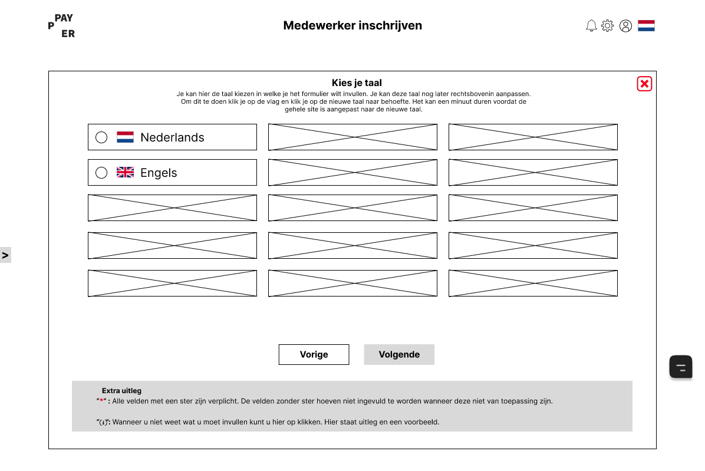
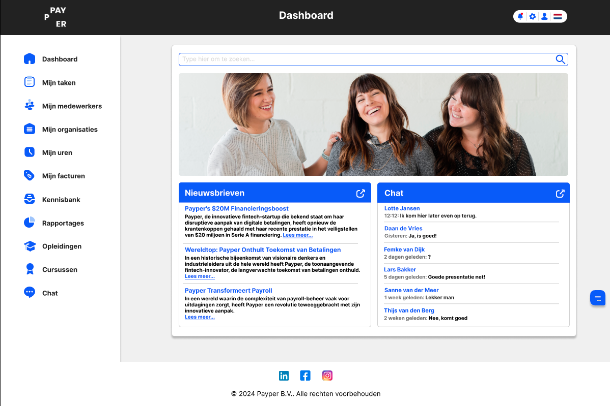
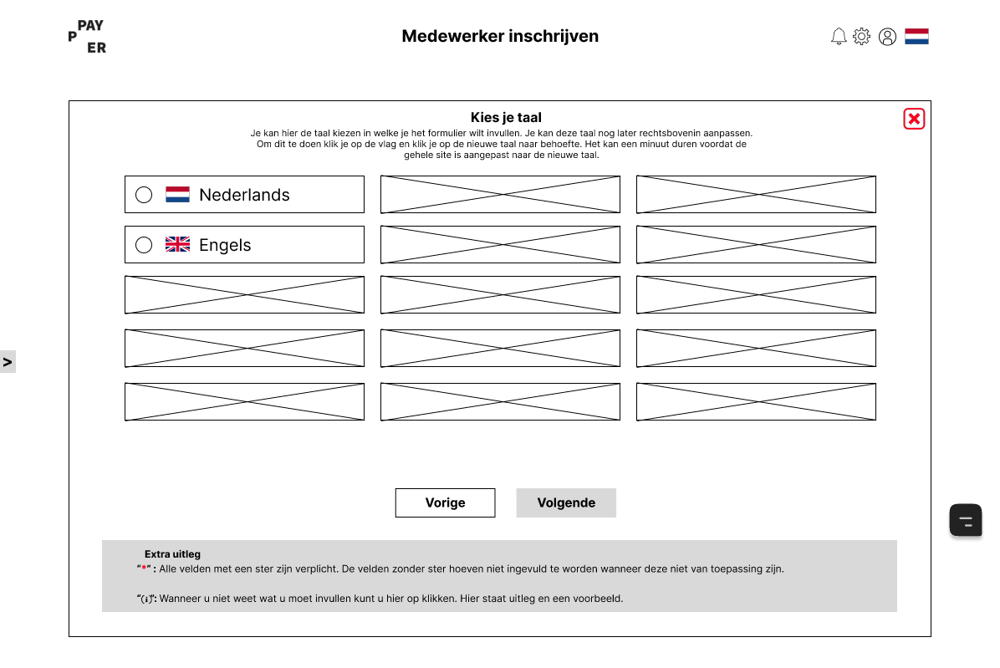
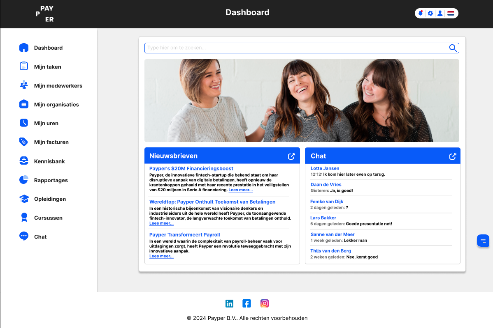

Ik heb stage gelopen bij People First Group. Hiervoor heb ik een onboardingtool ontworpen waarop ze bij klanten medewerkers hun benodigde gegevens op kunnen laten invullen.
Dit project heeft 20 weken geduurd. Hierbij heb ik onderzoeken gedaan, waaronder literatuuronderzoek, interviews en user testen voor de gebruiksvriendelijkheid. Ook heb ik een wireframe en een High-Fi prototype gemaakt. Deze zijn rechts op deze pagina te zien. In dit project heb ik samengewerkt met een andere stagiaire. Hierbij heb ik gefocust op het desktop design en heeft de andere stagiaire gefocust op het mobiele design. De designs zijn gevalideerd met user-centered design principles.z
Gedurende deze stage heb ik geleerd om in een professionele werkomgeving te werken en heb ik mijzelf verder kunnen ontwikkelen. People First was erg tevreden over het High-Fi prototype en hoe de stage is verlopen. Ze gaan dit ontwerp ontwikkelen en gebruiken voor hun klanten.
Photoshop, Figma
 


